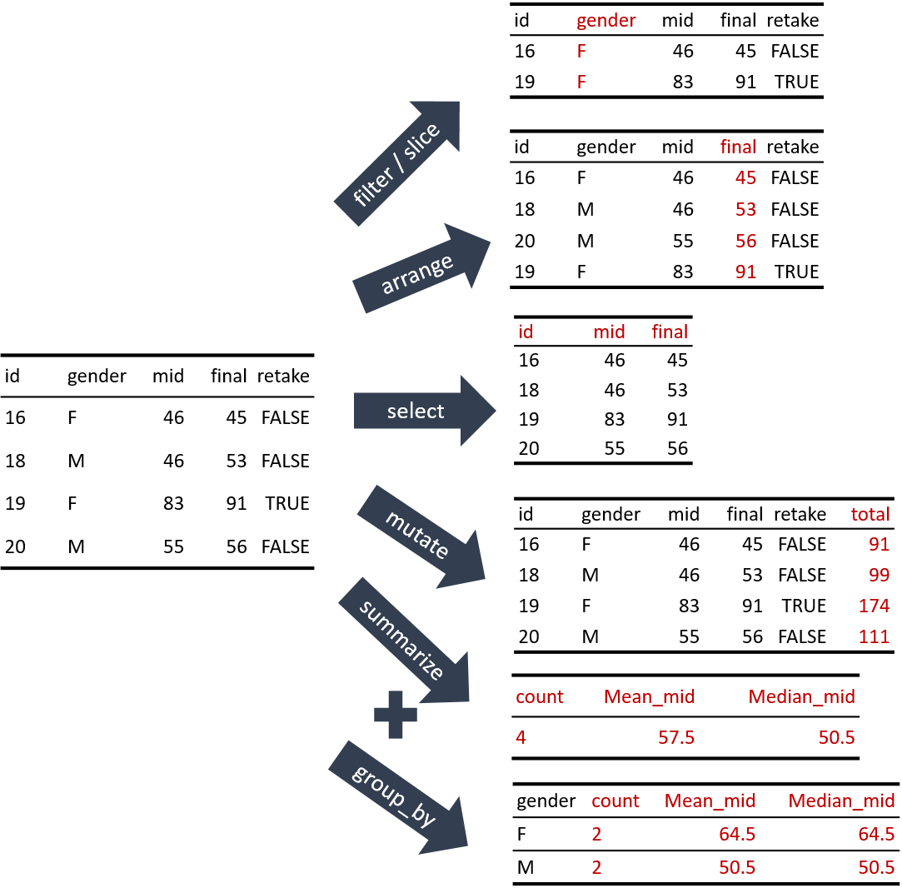

Chapter 7 dplyr을 이용한 데이터 변환
데이터를 분석하려면 데이터를 분석에 적절한 형식으로 변환하는 전처리가 필요하다. 또한 기본적인 분석을 위해서도 데이터를 요약하는 작업이 필요하다. 이 장에서는 정돈 형식의 데이터 프레임을 변환하는 방법을 배운다.
7.1 정돈 데이터 (tidy data)
7.1.1 정돈 데이터 형식의 조건
정돈 데이터란 그림 7.1처럼 다음의 조건을 만족하는 데이터 행렬(R에서는 데이터 프레임)의 형식을 의미한다.
- 데이터 행렬의 각 행과 관측(대상)(observations)은 일대일의 관계이다.
- 데이터 행렬의 각 열과 변수(variables)는 일대일의 관계이다.
- 측정값(values)은 각 셀과 일대일의 관계이다.
Figure 7.1: 정돈 데이터
7.1.2 비정돈 데이터 형식
현실에서 만나는 많은 데이터가 정돈 데이터 형식이지만, 그렇지 않은 데이터도 자주 볼 수 있다. 그림 7.2의 왼쪽 데이터는 어떤 가상의 감염병에 대해 세 나라의 발생 사례를 월별로 정리한 데이터이다. 이 데이터는 감염 사례라는 변수와 관련된 데이터가 3개의 열에 흩어져 있으므로 비정돈 형식이다. 월별, 년도별 매출처럼 시계열 데이터는 종종 이런 형식으로 데이터가 표현된다. 이러한 방식의 표현은 데이터를 매우 압축적인 방식으로 표현할 수 있고 같은 시간대의 데이터를 비교하기 쉬운 장점이 있다.
그림 7.2의 오른쪽 데이터는 왼쪽 데이터를 정돈 형식으로 변환한 결과이다. 이러한 변환을 하는 방법에 대해서는 9 장에서 다룰 것이다.
Figure 7.2: 비정돈 데이터
7.1.3 정돈 데이터를 사용하는 이유
그림 7.2를 보면 정돈 형식 데이터가 오히려 비효율적인 방식으로 보이며, 데이터를 한 눈에 비교하기도 어려워 보인다. 그럼에도 정돈 형식의 데이터를 사용하는 이유는 표준화된 데이터 변환 작업을 하기 위해서이다.
한 행이 하나의 관측 대상을, 한 열이 하나의 변수를, 한 셀이 한 값을 나타낸다는 가정이 성립하면, 데이터 변환이나 데이터를 이용한 그래픽 작업을 데이터의 내용에 무관하게 항상 일정한 형식으로 수행할 수 있다.
7.2 tidyverse 패키지
tidyverse 패키지는 정돈 데이터 패러다임을 따른 R 패키지들을 한번에 설치하고 적재할 수 있도록 돕는 패키지이다.
7.2.1 tidyverse 패키지 설치
tidyverse 패키지를 설치하려면 다음 명령을 실행하면 된다. 패키지의 이름은 문자열이므로 따옴표 안에 기술해야 한다.
또는 RStudio의 Packages 탭에서 [Install]을 클릭한 후 tidyverse라고 입력을 하면 된다. 패키지 설치는 한 번만 수행하면 된다.
7.2.2 tidyverse 패키지 적재
tidyverse 패키지가 설치되었으면 패키지를 사용할 때마다 네임스페이스를 적재하고 검색 리스트에 패키지를 포함하는 작업이 필요하다.6 다음은 tidyverse 패키지를 적재하는 명령어이다. 이번에는 패키지 이름에 따옴표가 없음에 주의한다.
── Attaching core tidyverse packages ──────────────────────── tidyverse 2.0.0 ──
✔ dplyr 1.1.4 ✔ readr 2.1.5
✔ forcats 1.0.0 ✔ stringr 1.5.1
✔ ggplot2 3.5.1 ✔ tibble 3.2.1
✔ lubridate 1.9.3 ✔ tidyr 1.3.1
✔ purrr 1.0.2
── Conflicts ────────────────────────────────────────── tidyverse_conflicts() ──
✖ dplyr::filter() masks stats::filter()
✖ dplyr::lag() masks stats::lag()
ℹ Use the conflicted package (<http://conflicted.r-lib.org/>) to force all conflicts to become errors앞의 명령을 실행하면 정돈 데이터 패러다임을 따르는 여러 개의 패키지가 동시에 적재된다. 그리고 R 기본 패키지와 정돈 데이터 패키지 중에서 이름이 충돌이 나는 것에 대해 보고를 한다. 만약 R 기본 패키지에서 이 함수를 사용하는 경우에는 패키지이름::함수() 형식으로만 사용할 수 있다. 자세한 내용은 R 관련 책을 참조하기 바란다.
7.3 dplyr 패키지와 정돈 데이터의 변환
7.3.1 dplyr 패키지
정돈 데이터의 변환에는 tidyverse 패키지가 포함하고 있는 dplyr 패키지가 이용된다. 앞에서 tidyverse를 적재하였으면 이미 dplyr이 적재되어 있으므로 다시 적재할 필요가 없다.
7.3.2 정돈 데이터 변환의 종류
정돈 데이터의 변환은 크게 5가지 변환 작업이 있다.
- 행 선택:
filter(): 데이터에서 특정 열의 값이 조건에 맞는 행만 선택한다.slice(): 데이터에서 특정 위치의 행만 선택한다.
- 행 정렬
arrange(): 특정 열의 값을 기준으로 데이터의 행을 정렬한다.
- 열 선택:
select(): 열의 이름, 위치, 데이터 형식 등으로 일부 열만 데이터에서 선택한다.
- 열 추가:
mutate(): 기존 열을 사용하여 새로운 열을 데이터에 추가한다.
- 데이터 요약:
summarize(): 데이터 전체 또는 특정 열을 하나의 통계량으로 요약한다.group_by(): 데이터 요약에만 사용되는 것은 아니나, 그룹별로 데이터를 통계 요약할 때 자주 사용된다.
그리고 위의 작업은 group_by() 함수와 같이 사용되어 전체 데이터에서 작업이 수행되는 것이 아니라, 데이터 행을 특정 열의 값을 기준으로 그룹으로 나누어서 그룹별로 데이터 변환 작업이 수행되도록 조정할 수 있다.
다음 그림은 정돈 데이터 변환 함수에 의한 변환 결과를 예시하고 있다.

이 함수들은 모두 다음과 같은 인터페이스를 가지고 있다.
- 첫 번재 인수로 변환할 데이터프레임을 받는다.
- 나머지 인수는 데이터프레임에 어떤 변환을 할지를 지정한다. 데이터프레임의 열을 지정할 때 열 이름을 따옴표 없이 변수처럼 사용한다.
- 함수의 결과는 변환이 수행된 새로운 데이터프레임이다.
일반적으로 데이터의 변환 작업은 위의 6가지 작업이 여러 차례 순서대로 결합하여 진행된다.
7.3.3 dplyr 패키지 vs. R의 기본 기능
앞으로 볼 dplyr 패키지의 함수들이 수행하는 작업은 R에서 제공하는 기본 함수로도 수행될 수 있다.
특히 filter(), arrange(), select(), mutate() 함수의 작업은 R 데이터프레임의 필터링 기능을 사용하면 대체할 수 있으며, summarize()와 group_by() 함수의 작업은 tapply(), aggregate() 등을 사용하면 대체할 수 있다.
그럼에도 불구하고 복잡한 데이터 변환을 수행할 때 R의 기본 기능보다는 dplyr 패키지의 함수들이 선호되는 이유는 다음과 같다.
dplyr함수에서는 데이터프레임의 열을 변수처럼 사용할 수 있어서 R의 기본 기능보다 더 짧은 명령문으로 데이터의 조작과 변환이 가능하다.- R의 기본 함수들은 한 함수가 여러 가지 변환을 수행하고 서로의 기능이 중복되는데 반해,
dplyr패키지의 함수는 오직 하나의 기능만을 수행하고 서로 기능이 중복되지 않아서 명령문을 이해하기 쉽다. - R의 기본 함수들이 입력과 출력 형식이 제각각인데 반해,
dplyr패키지의 함수는 공통된 입력과 출력 형식을 사용하므로 여러 단계를 거치는 복잡한 데이터 변환 작업도dplyr함수를 파이프 연산자로 연결하여 쉽게 구현할 수 있다.
7.3.4 mpg 데이터
이 장에서는 ggplot2() 패키지에서 제공하는 mpg 데이터를 이용하여 정돈 데이터를 변환하는 함수를 설명한다.
다음 명령을 이용하여 mpg 데이터를 출력해 보자. 화면의 크기에 따라 출력되는 내용이 책과는 조금 다를 수 있다.
# A tibble: 234 × 11
manufacturer model displ year cyl trans drv cty hwy fl class
<chr> <chr> <dbl> <int> <int> <chr> <chr> <int> <int> <chr> <chr>
1 audi a4 1.8 1999 4 auto… f 18 29 p comp…
2 audi a4 1.8 1999 4 manu… f 21 29 p comp…
3 audi a4 2 2008 4 manu… f 20 31 p comp…
4 audi a4 2 2008 4 auto… f 21 30 p comp…
5 audi a4 2.8 1999 6 auto… f 16 26 p comp…
6 audi a4 2.8 1999 6 manu… f 18 26 p comp…
7 audi a4 3.1 2008 6 auto… f 18 27 p comp…
8 audi a4 quattro 1.8 1999 4 manu… 4 18 26 p comp…
9 audi a4 quattro 1.8 1999 4 auto… 4 16 25 p comp…
10 audi a4 quattro 2 2008 4 manu… 4 20 28 p comp…
# ℹ 224 more rowsmpg는 1999년과 2008년에 미국 EPA에서 조사하여 발표한 자동차 주요 모델별 연비 데이터이다. 데이터는 234 개의 행이 있으며, 각 행은 다음과 같은 변수로 구성되어 있다.
- manufacturer: 자동차 제조사
- model: 자동차 모델명
- displ: 자동차 배기량
- year: 제조년도
- cyl: 엔진 실린더 수
- trans: 자동차 트랜스미션 종류
- drv: 자동차 구동 방식. f=전륜구동, r=후륜구동, 4=사륜구동
- cty: 도심 연비 (마일/갤론)
- hwy: 고속도로 연비 (마일/갤론)
- fl: 연료 종류
- class: 자동차 분류
7.4 filter()로 행 선택하기
7.4.1 선택 조건이 하나인 경우
선택 조건이 하나인 경우 다음 형식으로 filter()를 사용한다.
filter(데이터프레임, 조건)’데이터프레임’에는 filter()를 적용할 데이터 프레임을 ’조건’에는 행 선택 조건을 기술한다. ’조건’은 논리값 벡터이어야 한다. 많은 경우 ’조건’은 다음처럼 변수와 어떤 값을 비교연산자로 비교한다. 다음 예에서 보는 것처럼 dplyr 패키지의 함수들은 첫번째 인수로 데이터프레임을 지정한 후, 나머지 부분에서 그 데이터프레임의 열을 변수처럼 사용할 수 있다.
# A tibble: 14 × 11
manufacturer model displ year cyl trans drv cty hwy fl class
<chr> <chr> <dbl> <int> <int> <chr> <chr> <int> <int> <chr> <chr>
1 hyundai sonata 2.4 1999 4 auto(l4) f 18 26 r mids…
2 hyundai sonata 2.4 1999 4 manual(… f 18 27 r mids…
3 hyundai sonata 2.4 2008 4 auto(l4) f 21 30 r mids…
4 hyundai sonata 2.4 2008 4 manual(… f 21 31 r mids…
5 hyundai sonata 2.5 1999 6 auto(l4) f 18 26 r mids…
6 hyundai sonata 2.5 1999 6 manual(… f 18 26 r mids…
7 hyundai sonata 3.3 2008 6 auto(l5) f 19 28 r mids…
8 hyundai tiburon 2 1999 4 auto(l4) f 19 26 r subc…
9 hyundai tiburon 2 1999 4 manual(… f 19 29 r subc…
10 hyundai tiburon 2 2008 4 manual(… f 20 28 r subc…
11 hyundai tiburon 2 2008 4 auto(l4) f 20 27 r subc…
12 hyundai tiburon 2.7 2008 6 auto(l4) f 17 24 r subc…
13 hyundai tiburon 2.7 2008 6 manual(… f 16 24 r subc…
14 hyundai tiburon 2.7 2008 6 manual(… f 17 24 r subc…# A tibble: 3 × 11
manufacturer model displ year cyl trans drv cty hwy fl class
<chr> <chr> <dbl> <int> <int> <chr> <chr> <int> <int> <chr> <chr>
1 volkswagen jetta 1.9 1999 4 manua… f 33 44 d comp…
2 volkswagen new beetle 1.9 1999 4 manua… f 35 44 d subc…
3 volkswagen new beetle 1.9 1999 4 auto(… f 29 41 d subc…# A tibble: 5 × 11
manufacturer model displ year cyl trans drv cty hwy fl class
<chr> <chr> <dbl> <int> <int> <chr> <chr> <int> <int> <chr> <chr>
1 honda civic 1.6 1999 4 manua… f 28 33 r subc…
2 toyota corolla 1.8 2008 4 manua… f 28 37 r comp…
3 volkswagen jetta 1.9 1999 4 manua… f 33 44 d comp…
4 volkswagen new beetle 1.9 1999 4 manua… f 35 44 d subc…
5 volkswagen new beetle 1.9 1999 4 auto(… f 29 41 d subc…조건을 서술할 때 자주 틀리는 부분이 등호 기호로 =를 사용하는 것이다. R에서 두 값이 같은지를 비교할 때는 ==를 사용한다.
다음처럼 조건에 사용되는 변수에 대해 연산을 수행한 후에 그 결과를 비교할 수도 있다.
# A tibble: 2 × 11
manufacturer model displ year cyl trans drv cty hwy fl class
<chr> <chr> <dbl> <int> <int> <chr> <chr> <int> <int> <chr> <chr>
1 volkswagen jetta 1.9 1999 4 manua… f 33 44 d comp…
2 volkswagen new beetle 1.9 1999 4 manua… f 35 44 d subc…# A tibble: 5 × 11
manufacturer model displ year cyl trans drv cty hwy fl class
<chr> <chr> <dbl> <int> <int> <chr> <chr> <int> <int> <chr> <chr>
1 dodge dakota pic… 4.7 2008 8 auto… 4 9 12 e pick…
2 dodge durango 4wd 4.7 2008 8 auto… 4 9 12 e suv
3 dodge ram 1500 p… 4.7 2008 8 auto… 4 9 12 e pick…
4 dodge ram 1500 p… 4.7 2008 8 manu… 4 9 12 e pick…
5 jeep grand cher… 4.7 2008 8 auto… 4 9 12 e suv 7.4.2 여러 조건을 만족하는 행 추출하기
두 개 이상의 조건을 모두 만족하는 행만 뽑아내려면 다음의 문법을 사용한다.
filter(데이터프레임, 조건1, 조건2, ..., 조건n)다음은 현대에서 생산한 차 중 도심 연비가 20 마일 이상인 차만 추출한 결과이다.
# A tibble: 4 × 11
manufacturer model displ year cyl trans drv cty hwy fl class
<chr> <chr> <dbl> <int> <int> <chr> <chr> <int> <int> <chr> <chr>
1 hyundai sonata 2.4 2008 4 auto(l4) f 21 30 r mids…
2 hyundai sonata 2.4 2008 4 manual(m… f 21 31 r mids…
3 hyundai tiburon 2 2008 4 manual(m… f 20 28 r subc…
4 hyundai tiburon 2 2008 4 auto(l4) f 20 27 r subc…앞의 조건에서 배기량이 2.4 이상인 차만 추출해 보자.
# A tibble: 2 × 11
manufacturer model displ year cyl trans drv cty hwy fl class
<chr> <chr> <dbl> <int> <int> <chr> <chr> <int> <int> <chr> <chr>
1 hyundai sonata 2.4 2008 4 auto(l4) f 21 30 r mids…
2 hyundai sonata 2.4 2008 4 manual(m5) f 21 31 r mids…7.4.3 논리 연산자로 복합 조건 만들기
지금까지는 하나의 조건이나 여러 조건을 동시에 만족하는 행을 추출하는 방법을 보았다. 어떤 경우에는 여러 조건 중 하나라도 만족하면 그 행을 추출해야 할 경우가 있다. 이러한 경우에는 2 장에서 배운 논리 연산자를 이용하여 복합 조건을 만들어야 한다.
다음은 OR 연자자인 |를 이용하여 두 조건 중 하나만 만족하여도 행이 추출되도록 하였다.
# A tibble: 12 × 11
manufacturer model displ year cyl trans drv cty hwy fl class
<chr> <chr> <dbl> <int> <int> <chr> <chr> <int> <int> <chr> <chr>
1 honda civic 1.6 1999 4 manu… f 28 33 r subc…
2 hyundai sonata 2.4 1999 4 auto… f 18 26 r mids…
3 hyundai sonata 2.4 1999 4 manu… f 18 27 r mids…
4 hyundai sonata 2.4 2008 4 auto… f 21 30 r mids…
5 hyundai sonata 2.4 2008 4 manu… f 21 31 r mids…
6 hyundai sonata 2.5 1999 6 auto… f 18 26 r mids…
7 hyundai sonata 2.5 1999 6 manu… f 18 26 r mids…
8 hyundai sonata 3.3 2008 6 auto… f 19 28 r mids…
9 toyota corolla 1.8 2008 4 manu… f 28 37 r comp…
10 volkswagen jetta 1.9 1999 4 manu… f 33 44 d comp…
11 volkswagen new beetle 1.9 1999 4 manu… f 35 44 d subc…
12 volkswagen new beetle 1.9 1999 4 auto… f 29 41 d subc…만약 위의 결과에서 2008년도 데이터만 추출하고 싶다면 어떻게 해야 할까? 다음처럼 두 조건식을 사용하여 첫 번째 조건과 두 번째 조건을 모두 만족하는 결과만 추출할 수도 있고, 하나의 조건식에 AND 연산자인 &를 사용하여 복합 조건식을 사용하여 추출할 수도 있다.
# A tibble: 4 × 11
manufacturer model displ year cyl trans drv cty hwy fl class
<chr> <chr> <dbl> <int> <int> <chr> <chr> <int> <int> <chr> <chr>
1 hyundai sonata 2.4 2008 4 auto(l4) f 21 30 r mids…
2 hyundai sonata 2.4 2008 4 manual(m… f 21 31 r mids…
3 hyundai sonata 3.3 2008 6 auto(l5) f 19 28 r mids…
4 toyota corolla 1.8 2008 4 manual(m… f 28 37 r comp…# A tibble: 4 × 11
manufacturer model displ year cyl trans drv cty hwy fl class
<chr> <chr> <dbl> <int> <int> <chr> <chr> <int> <int> <chr> <chr>
1 hyundai sonata 2.4 2008 4 auto(l4) f 21 30 r mids…
2 hyundai sonata 2.4 2008 4 manual(m… f 21 31 r mids…
3 hyundai sonata 3.3 2008 6 auto(l5) f 19 28 r mids…
4 toyota corolla 1.8 2008 4 manual(m… f 28 37 r comp…단, 복합 조건식에서 AND 연산이 OR 연산보다 우선순위가 있으므로 괄호를 사용하여 연산의 순서가 제대로 되도록 하여야 한다. 괄호가 없으면 AND가 수행된 후 OR가 수행되어 모든 소타나 자동차의 결과가 추출되었음을 볼 수 있다.
# A tibble: 8 × 11
manufacturer model displ year cyl trans drv cty hwy fl class
<chr> <chr> <dbl> <int> <int> <chr> <chr> <int> <int> <chr> <chr>
1 hyundai sonata 2.4 1999 4 auto(l4) f 18 26 r mids…
2 hyundai sonata 2.4 1999 4 manual(m… f 18 27 r mids…
3 hyundai sonata 2.4 2008 4 auto(l4) f 21 30 r mids…
4 hyundai sonata 2.4 2008 4 manual(m… f 21 31 r mids…
5 hyundai sonata 2.5 1999 6 auto(l4) f 18 26 r mids…
6 hyundai sonata 2.5 1999 6 manual(m… f 18 26 r mids…
7 hyundai sonata 3.3 2008 6 auto(l5) f 19 28 r mids…
8 toyota corolla 1.8 2008 4 manual(m… f 28 37 r comp…7.4.4 %in% 연산자
만약 조사 년도가 2008년이고, 고속도로 연비가 30 이상이면서, 자동차 모델이 sonata 또는 corolla 또는 jetta인 행을 찾고자 한다면 어떻게 해야 할까? 앞에서 배운 복잡 조건문을 사용하여 다음처럼 수행할 수 있을 것이다.
# A tibble: 9 × 11
manufacturer model displ year cyl trans drv cty hwy fl class
<chr> <chr> <dbl> <int> <int> <chr> <chr> <int> <int> <chr> <chr>
1 hyundai sonata 2.4 2008 4 auto(l4) f 21 30 r mids…
2 hyundai sonata 2.4 2008 4 manual(m… f 21 31 r mids…
3 hyundai sonata 3.3 2008 6 auto(l5) f 19 28 r mids…
4 toyota corolla 1.8 2008 4 manual(m… f 28 37 r comp…
5 toyota corolla 1.8 2008 4 auto(l4) f 26 35 r comp…
6 volkswagen jetta 2 2008 4 auto(s6) f 22 29 p comp…
7 volkswagen jetta 2 2008 4 manual(m… f 21 29 p comp…
8 volkswagen jetta 2.5 2008 5 auto(s6) f 21 29 r comp…
9 volkswagen jetta 2.5 2008 5 manual(m… f 21 29 r comp…위의 명령은 %in% 연산자를 사용하면 좀 더 간단해 질 수 있다.
%in% 연산자는 어떤 값이 벡터의 요소 중에 하나인지를 판별해 준다.
[1] FALSE[1] TRUE[1] TRUE[1] FALSE그러므로 앞에서 수행한 명령은 다음처럼 수행할 수도 있다.
# A tibble: 9 × 11
manufacturer model displ year cyl trans drv cty hwy fl class
<chr> <chr> <dbl> <int> <int> <chr> <chr> <int> <int> <chr> <chr>
1 hyundai sonata 2.4 2008 4 auto(l4) f 21 30 r mids…
2 hyundai sonata 2.4 2008 4 manual(m… f 21 31 r mids…
3 hyundai sonata 3.3 2008 6 auto(l5) f 19 28 r mids…
4 toyota corolla 1.8 2008 4 manual(m… f 28 37 r comp…
5 toyota corolla 1.8 2008 4 auto(l4) f 26 35 r comp…
6 volkswagen jetta 2 2008 4 auto(s6) f 22 29 p comp…
7 volkswagen jetta 2 2008 4 manual(m… f 21 29 p comp…
8 volkswagen jetta 2.5 2008 5 auto(s6) f 21 29 r comp…
9 volkswagen jetta 2.5 2008 5 manual(m… f 21 29 r comp…7.5 slice()로 행 선택하기
slice() 함수는 다음 문법을 사용하여 행을 선택한다.
slice(데이터프레임, 선택위치1, 선택위치2, ...)선택위치에는 양의 정수 또는 음의 정수 벡터가 지정된다.
양의 정수 벡터가 지정되면 해당 위치의 행이 선택되고, 음의 정수 벡터가 지정되면 해당 위치의 행을 제외한 나머지 행이 선택된다.
그런데 주의할 점은 선택위치에 지정되는 벡터는 모두 양의 정수 벡터이거나 모두 음의 정수 벡터이어야 한다는 것이다.
다음은 2008년도 현대의 자동차 모델만 filter()론 선택하여 a라는 변수에 저장한 후, 이 데이터를 가지고 slice()를 사용하여 여러 위치의 행을 선택해본 예이다.
# A tibble: 8 × 11
manufacturer model displ year cyl trans drv cty hwy fl class
<chr> <chr> <dbl> <int> <int> <chr> <chr> <int> <int> <chr> <chr>
1 hyundai sonata 2.4 2008 4 auto(l4) f 21 30 r mids…
2 hyundai sonata 2.4 2008 4 manual(m… f 21 31 r mids…
3 hyundai sonata 3.3 2008 6 auto(l5) f 19 28 r mids…
4 hyundai tiburon 2 2008 4 manual(m… f 20 28 r subc…
5 hyundai tiburon 2 2008 4 auto(l4) f 20 27 r subc…
6 hyundai tiburon 2.7 2008 6 auto(l4) f 17 24 r subc…
7 hyundai tiburon 2.7 2008 6 manual(m… f 16 24 r subc…
8 hyundai tiburon 2.7 2008 6 manual(m… f 17 24 r subc…# A tibble: 1 × 11
manufacturer model displ year cyl trans drv cty hwy fl class
<chr> <chr> <dbl> <int> <int> <chr> <chr> <int> <int> <chr> <chr>
1 hyundai sonata 2.4 2008 4 auto(l4) f 21 30 r midsize# A tibble: 3 × 11
manufacturer model displ year cyl trans drv cty hwy fl class
<chr> <chr> <dbl> <int> <int> <chr> <chr> <int> <int> <chr> <chr>
1 hyundai sonata 2.4 2008 4 auto(l4) f 21 30 r mids…
2 hyundai sonata 2.4 2008 4 manual(m5) f 21 31 r mids…
3 hyundai sonata 3.3 2008 6 auto(l5) f 19 28 r mids…# A tibble: 5 × 11
manufacturer model displ year cyl trans drv cty hwy fl class
<chr> <chr> <dbl> <int> <int> <chr> <chr> <int> <int> <chr> <chr>
1 hyundai sonata 2.4 2008 4 auto(l4) f 21 30 r mids…
2 hyundai sonata 2.4 2008 4 manual(m… f 21 31 r mids…
3 hyundai sonata 3.3 2008 6 auto(l5) f 19 28 r mids…
4 hyundai tiburon 2.7 2008 6 auto(l4) f 17 24 r subc…
5 hyundai tiburon 2.7 2008 6 manual(m… f 16 24 r subc…# A tibble: 7 × 11
manufacturer model displ year cyl trans drv cty hwy fl class
<chr> <chr> <dbl> <int> <int> <chr> <chr> <int> <int> <chr> <chr>
1 hyundai sonata 2.4 2008 4 manual(m… f 21 31 r mids…
2 hyundai sonata 3.3 2008 6 auto(l5) f 19 28 r mids…
3 hyundai tiburon 2 2008 4 manual(m… f 20 28 r subc…
4 hyundai tiburon 2 2008 4 auto(l4) f 20 27 r subc…
5 hyundai tiburon 2.7 2008 6 auto(l4) f 17 24 r subc…
6 hyundai tiburon 2.7 2008 6 manual(m… f 16 24 r subc…
7 hyundai tiburon 2.7 2008 6 manual(m… f 17 24 r subc…# A tibble: 4 × 11
manufacturer model displ year cyl trans drv cty hwy fl class
<chr> <chr> <dbl> <int> <int> <chr> <chr> <int> <int> <chr> <chr>
1 hyundai sonata 2.4 2008 4 manual(m… f 21 31 r mids…
2 hyundai sonata 3.3 2008 6 auto(l5) f 19 28 r mids…
3 hyundai tiburon 2.7 2008 6 manual(m… f 16 24 r subc…
4 hyundai tiburon 2.7 2008 6 manual(m… f 17 24 r subc…7.5.1 slice_sample()로 표본 추출하기
데이터를 분석할 때 데이터의 일부 행만 임의로 추출해야하는 경우가 있다.
slice_sample()을 사용하면 데이터에서 원하는 수 또는 비율만큼 행을 임의 추출할 수 있다.
원하는 수만큼 임의 추출하려면 n 인수를 원하는 비율만큼 행을 추출하려면 prop 인수를 사용한다.
# A tibble: 3 × 11
manufacturer model displ year cyl trans drv cty hwy fl class
<chr> <chr> <dbl> <int> <int> <chr> <chr> <int> <int> <chr> <chr>
1 hyundai tiburon 2.7 2008 6 manual(m… f 17 24 r subc…
2 hyundai sonata 3.3 2008 6 auto(l5) f 19 28 r mids…
3 hyundai tiburon 2.7 2008 6 auto(l4) f 17 24 r subc…# A tibble: 6 × 11
manufacturer model displ year cyl trans drv cty hwy fl class
<chr> <chr> <dbl> <int> <int> <chr> <chr> <int> <int> <chr> <chr>
1 hyundai tiburon 2.7 2008 6 manual(m… f 17 24 r subc…
2 hyundai tiburon 2 2008 4 auto(l4) f 20 27 r subc…
3 hyundai sonata 2.4 2008 4 auto(l4) f 21 30 r mids…
4 hyundai tiburon 2 2008 4 manual(m… f 20 28 r subc…
5 hyundai sonata 2.4 2008 4 manual(m… f 21 31 r mids…
6 hyundai tiburon 2.7 2008 6 auto(l4) f 17 24 r subc…7.5.2 slice_head()와 slice_tail()
데이터의 맨 앞의 행들이나, 맨 뒤의 행을 추출할 때 사용한다.
n 인수를 지정하여 원하는 수만큼의 행을 추출할 수도 있고, prop 인수를 지정하여 원하는 비율만큼의 행을 추출할 수도 있다.
# A tibble: 4 × 11
manufacturer model displ year cyl trans drv cty hwy fl class
<chr> <chr> <dbl> <int> <int> <chr> <chr> <int> <int> <chr> <chr>
1 audi a4 1.8 1999 4 auto(l5) f 18 29 p compa…
2 audi a4 1.8 1999 4 manual(m5) f 21 29 p compa…
3 audi a4 2 2008 4 manual(m6) f 20 31 p compa…
4 audi a4 2 2008 4 auto(av) f 21 30 p compa…# A tibble: 11 × 11
manufacturer model displ year cyl trans drv cty hwy fl class
<chr> <chr> <dbl> <int> <int> <chr> <chr> <int> <int> <chr> <chr>
1 volkswagen new beetle 2 1999 4 manu… f 21 29 r subc…
2 volkswagen new beetle 2 1999 4 auto… f 19 26 r subc…
3 volkswagen new beetle 2.5 2008 5 manu… f 20 28 r subc…
4 volkswagen new beetle 2.5 2008 5 auto… f 20 29 r subc…
5 volkswagen passat 1.8 1999 4 manu… f 21 29 p mids…
6 volkswagen passat 1.8 1999 4 auto… f 18 29 p mids…
7 volkswagen passat 2 2008 4 auto… f 19 28 p mids…
8 volkswagen passat 2 2008 4 manu… f 21 29 p mids…
9 volkswagen passat 2.8 1999 6 auto… f 16 26 p mids…
10 volkswagen passat 2.8 1999 6 manu… f 18 26 p mids…
11 volkswagen passat 3.6 2008 6 auto… f 17 26 p mids…7.5.3 slice_min()과 slice_max()
특정 열을 기준으로 가장 값이 작은 행 또는 가장 값이 큰 행을 추출하는 함수이다.
사실 뒤에서 설명할 arrange() 함수를 적용한 후 slice() 함수를 적용하면 같은 효과를 구현할 수 있다.
# A tibble: 3 × 11
manufacturer model displ year cyl trans drv cty hwy fl class
<chr> <chr> <dbl> <int> <int> <chr> <chr> <int> <int> <chr> <chr>
1 hyundai tiburon 2.7 2008 6 manual(m… f 16 24 r subc…
2 hyundai tiburon 2.7 2008 6 auto(l4) f 17 24 r subc…
3 hyundai tiburon 2.7 2008 6 manual(m… f 17 24 r subc…# A tibble: 3 × 11
manufacturer model displ year cyl trans drv cty hwy fl class
<chr> <chr> <dbl> <int> <int> <chr> <chr> <int> <int> <chr> <chr>
1 hyundai tiburon 2.7 2008 6 auto(l4) f 17 24 r subc…
2 hyundai tiburon 2.7 2008 6 manual(m… f 16 24 r subc…
3 hyundai tiburon 2.7 2008 6 manual(m… f 17 24 r subc…결과에서 보듯이 동률이 있는 경우 동률인 행도 모두 추출되므로 n으로 정한 행의 수보다 많은 행이 추출될 수 있다. 동률인 행인 추출되지 않도록 하려면 with_ties=FALSE 인수를 설정하면 된다.
# A tibble: 2 × 11
manufacturer model displ year cyl trans drv cty hwy fl class
<chr> <chr> <dbl> <int> <int> <chr> <chr> <int> <int> <chr> <chr>
1 hyundai tiburon 2.7 2008 6 manual(m… f 16 24 r subc…
2 hyundai tiburon 2.7 2008 6 auto(l4) f 17 24 r subc…7.6 arrange()로 행 정렬하기
arrange()는 다음 문법을 사용하여 행을 정렬한다.
arrange(데이터프레임, 첫번째 정렬 기준 변수, 두번째 정렬 기준 변수, ....)filter()와 마찬가지로 첫 번재 인수로 정렬할 데이터 프레임을 전달 받는다. 그리고 두번재 인수부터 정렬의 기준이 되는 변수를 차례로 기술한다. 첫 번째 기준 변수의 값이 같으면, 두 번째 기준 변수를, 두 번째 기준 변수의 값까지 같으면 그 다음 변수를 기준으로 차례로 순서를 결정하여 정렬을 수행한다.
다음은 2008년도 현대의 자동차 모델만 filter()론 선택하여 a라는 변수에 저장한 후, 이 데이터에 대하여 여러 조건으로 정렬을 수행해본 예이다.
# A tibble: 8 × 11
manufacturer model displ year cyl trans drv cty hwy fl class
<chr> <chr> <dbl> <int> <int> <chr> <chr> <int> <int> <chr> <chr>
1 hyundai sonata 2.4 2008 4 auto(l4) f 21 30 r mids…
2 hyundai sonata 2.4 2008 4 manual(m… f 21 31 r mids…
3 hyundai sonata 3.3 2008 6 auto(l5) f 19 28 r mids…
4 hyundai tiburon 2 2008 4 manual(m… f 20 28 r subc…
5 hyundai tiburon 2 2008 4 auto(l4) f 20 27 r subc…
6 hyundai tiburon 2.7 2008 6 auto(l4) f 17 24 r subc…
7 hyundai tiburon 2.7 2008 6 manual(m… f 16 24 r subc…
8 hyundai tiburon 2.7 2008 6 manual(m… f 17 24 r subc…# A tibble: 8 × 11
manufacturer model displ year cyl trans drv cty hwy fl class
<chr> <chr> <dbl> <int> <int> <chr> <chr> <int> <int> <chr> <chr>
1 hyundai sonata 2.4 2008 4 auto(l4) f 21 30 r mids…
2 hyundai sonata 2.4 2008 4 manual(m… f 21 31 r mids…
3 hyundai tiburon 2 2008 4 manual(m… f 20 28 r subc…
4 hyundai tiburon 2 2008 4 auto(l4) f 20 27 r subc…
5 hyundai sonata 3.3 2008 6 auto(l5) f 19 28 r mids…
6 hyundai tiburon 2.7 2008 6 auto(l4) f 17 24 r subc…
7 hyundai tiburon 2.7 2008 6 manual(m… f 16 24 r subc…
8 hyundai tiburon 2.7 2008 6 manual(m… f 17 24 r subc…# A tibble: 8 × 11
manufacturer model displ year cyl trans drv cty hwy fl class
<chr> <chr> <dbl> <int> <int> <chr> <chr> <int> <int> <chr> <chr>
1 hyundai tiburon 2 2008 4 manual(m… f 20 28 r subc…
2 hyundai tiburon 2 2008 4 auto(l4) f 20 27 r subc…
3 hyundai sonata 2.4 2008 4 auto(l4) f 21 30 r mids…
4 hyundai sonata 2.4 2008 4 manual(m… f 21 31 r mids…
5 hyundai tiburon 2.7 2008 6 manual(m… f 16 24 r subc…
6 hyundai tiburon 2.7 2008 6 auto(l4) f 17 24 r subc…
7 hyundai tiburon 2.7 2008 6 manual(m… f 17 24 r subc…
8 hyundai sonata 3.3 2008 6 auto(l5) f 19 28 r mids…# A tibble: 8 × 11
manufacturer model displ year cyl trans drv cty hwy fl class
<chr> <chr> <dbl> <int> <int> <chr> <chr> <int> <int> <chr> <chr>
1 hyundai sonata 2.4 2008 4 auto(l4) f 21 30 r mids…
2 hyundai sonata 3.3 2008 6 auto(l5) f 19 28 r mids…
3 hyundai sonata 2.4 2008 4 manual(m… f 21 31 r mids…
4 hyundai tiburon 2 2008 4 auto(l4) f 20 27 r subc…
5 hyundai tiburon 2.7 2008 6 auto(l4) f 17 24 r subc…
6 hyundai tiburon 2 2008 4 manual(m… f 20 28 r subc…
7 hyundai tiburon 2.7 2008 6 manual(m… f 17 24 r subc…
8 hyundai tiburon 2.7 2008 6 manual(m… f 16 24 r subc…7.6.1 desc()를 이용하여 내림차순으로 정렬하기
앞의 예에서 arrange()는 수치 변수는 올림차순으로 문자 변수는 알파벳 순으로 정렬하는 것을 볼 수 있다. 만약 위의 예에서 내림차순으로, 또는 알파벳 역순으로 정렬을 하고 싶으면 어떻게 하여야 할까? dplyr 패키지는 desc()를 이용하면 된다.
# A tibble: 8 × 11
manufacturer model displ year cyl trans drv cty hwy fl class
<chr> <chr> <dbl> <int> <int> <chr> <chr> <int> <int> <chr> <chr>
1 hyundai sonata 3.3 2008 6 auto(l5) f 19 28 r mids…
2 hyundai tiburon 2.7 2008 6 auto(l4) f 17 24 r subc…
3 hyundai tiburon 2.7 2008 6 manual(m… f 16 24 r subc…
4 hyundai tiburon 2.7 2008 6 manual(m… f 17 24 r subc…
5 hyundai sonata 2.4 2008 4 auto(l4) f 21 30 r mids…
6 hyundai sonata 2.4 2008 4 manual(m… f 21 31 r mids…
7 hyundai tiburon 2 2008 4 manual(m… f 20 28 r subc…
8 hyundai tiburon 2 2008 4 auto(l4) f 20 27 r subc…# A tibble: 8 × 11
manufacturer model displ year cyl trans drv cty hwy fl class
<chr> <chr> <dbl> <int> <int> <chr> <chr> <int> <int> <chr> <chr>
1 hyundai tiburon 2.7 2008 6 manual(m… f 16 24 r subc…
2 hyundai tiburon 2.7 2008 6 auto(l4) f 17 24 r subc…
3 hyundai tiburon 2.7 2008 6 manual(m… f 17 24 r subc…
4 hyundai sonata 3.3 2008 6 auto(l5) f 19 28 r mids…
5 hyundai tiburon 2 2008 4 manual(m… f 20 28 r subc…
6 hyundai tiburon 2 2008 4 auto(l4) f 20 27 r subc…
7 hyundai sonata 2.4 2008 4 auto(l4) f 21 30 r mids…
8 hyundai sonata 2.4 2008 4 manual(m… f 21 31 r mids…# A tibble: 8 × 11
manufacturer model displ year cyl trans drv cty hwy fl class
<chr> <chr> <dbl> <int> <int> <chr> <chr> <int> <int> <chr> <chr>
1 hyundai sonata 2.4 2008 4 manual(m… f 21 31 r mids…
2 hyundai sonata 3.3 2008 6 auto(l5) f 19 28 r mids…
3 hyundai sonata 2.4 2008 4 auto(l4) f 21 30 r mids…
4 hyundai tiburon 2.7 2008 6 manual(m… f 16 24 r subc…
5 hyundai tiburon 2 2008 4 manual(m… f 20 28 r subc…
6 hyundai tiburon 2.7 2008 6 manual(m… f 17 24 r subc…
7 hyundai tiburon 2 2008 4 auto(l4) f 20 27 r subc…
8 hyundai tiburon 2.7 2008 6 auto(l4) f 17 24 r subc…desc()가 적용된 변수만 내림차순을 기준으로 정렬을 하는 것을 볼 수 있다.
7.7 select()를 이용하여 변수 이름으로 열 선택하기
7.7.1 변수 이름을 나열하여 선택하기
select() 함수는 다음처럼 변수 이름을 일일이 나열하여 원하는 열을 선택할 수 있다. R의 기본 문법을 알고 있는 사람들은 데이터 프레임의 인덱싱에서처럼 문자열로 이름을 나열하는 것이 아니라 변수를 사용하듯 따옴표 없이 이름을 나열하는 것에 주의한다.
select(데이터프레임, 변수이름1, 변수이름 2, ....)# A tibble: 8 × 4
model year cty hwy
<chr> <int> <int> <int>
1 sonata 2008 21 30
2 sonata 2008 21 31
3 sonata 2008 19 28
4 tiburon 2008 20 28
5 tiburon 2008 20 27
6 tiburon 2008 17 24
7 tiburon 2008 16 24
8 tiburon 2008 17 247.7.2 변수 이름으로 변수 범위를 선택하기
select() 함수는 다음처럼 변수 이름으로 선택할 변수의 범위를 지정할 수 있다.
select(데이터프레임, 범위시작_변수이름:범위종료_변수이름, ...)# A tibble: 8 × 5
model displ year cyl trans
<chr> <dbl> <int> <int> <chr>
1 sonata 2.4 2008 4 auto(l4)
2 sonata 2.4 2008 4 manual(m5)
3 sonata 3.3 2008 6 auto(l5)
4 tiburon 2 2008 4 manual(m5)
5 tiburon 2 2008 4 auto(l4)
6 tiburon 2.7 2008 6 auto(l4)
7 tiburon 2.7 2008 6 manual(m6)
8 tiburon 2.7 2008 6 manual(m5)# A tibble: 8 × 7
model displ year cyl trans cty hwy
<chr> <dbl> <int> <int> <chr> <int> <int>
1 sonata 2.4 2008 4 auto(l4) 21 30
2 sonata 2.4 2008 4 manual(m5) 21 31
3 sonata 3.3 2008 6 auto(l5) 19 28
4 tiburon 2 2008 4 manual(m5) 20 28
5 tiburon 2 2008 4 auto(l4) 20 27
6 tiburon 2.7 2008 6 auto(l4) 17 24
7 tiburon 2.7 2008 6 manual(m6) 16 24
8 tiburon 2.7 2008 6 manual(m5) 17 24반대로 다음처럼 변수 이름으로 선택하지 않을 변수의 범위를 지정할 수 있다.
select(데이터프레임, -(범위시작_변수이름:범위종료_변수이름), ...)# A tibble: 8 × 6
manufacturer drv cty hwy fl class
<chr> <chr> <int> <int> <chr> <chr>
1 hyundai f 21 30 r midsize
2 hyundai f 21 31 r midsize
3 hyundai f 19 28 r midsize
4 hyundai f 20 28 r subcompact
5 hyundai f 20 27 r subcompact
6 hyundai f 17 24 r subcompact
7 hyundai f 16 24 r subcompact
8 hyundai f 17 24 r subcompact# A tibble: 8 × 5
drv cty hwy fl class
<chr> <int> <int> <chr> <chr>
1 f 21 30 r midsize
2 f 21 31 r midsize
3 f 19 28 r midsize
4 f 20 28 r subcompact
5 f 20 27 r subcompact
6 f 17 24 r subcompact
7 f 16 24 r subcompact
8 f 17 24 r subcompact7.7.3 변수 위치로 매칭하여 선택하기
select() 함수는 R의 기본 인덱싱(필터링)처럼 선택할 열의 위치를 자연수 인덱스 벡터로, 선택하지 않을 열은 음의 정수 인덱스 벡터로 지정할 수도 있다.
# A tibble: 8 × 3
manufacturer model displ
<chr> <chr> <dbl>
1 hyundai sonata 2.4
2 hyundai sonata 2.4
3 hyundai sonata 3.3
4 hyundai tiburon 2
5 hyundai tiburon 2
6 hyundai tiburon 2.7
7 hyundai tiburon 2.7
8 hyundai tiburon 2.7# A tibble: 8 × 4
manufacturer model displ cyl
<chr> <chr> <dbl> <int>
1 hyundai sonata 2.4 4
2 hyundai sonata 2.4 4
3 hyundai sonata 3.3 6
4 hyundai tiburon 2 4
5 hyundai tiburon 2 4
6 hyundai tiburon 2.7 6
7 hyundai tiburon 2.7 6
8 hyundai tiburon 2.7 6# A tibble: 8 × 4
manufacturer model displ class
<chr> <chr> <dbl> <chr>
1 hyundai sonata 2.4 midsize
2 hyundai sonata 2.4 midsize
3 hyundai sonata 3.3 midsize
4 hyundai tiburon 2 subcompact
5 hyundai tiburon 2 subcompact
6 hyundai tiburon 2.7 subcompact
7 hyundai tiburon 2.7 subcompact
8 hyundai tiburon 2.7 subcompact7.7.4 변수 이름을 매칭하여 선택하기
dplyr 패키지는 다양한 형태로 변수를 선택할 수 있도록 다음의 변수 이름 매칭 함수를 제공한다.
이러한 함수는 변수의 수가 많을 때 매우 유용하다.
starts_with("abs"): abc로 이름이 시작하는 모든 변수ends_with("abs"): abc로 이름이 끝나는 모든 변수contains("abs"): abc를 이름에 포함하고 있는 모든 변수matches("(.)\\1"): 정규 표현식을 만족하는 이름을 가진 모든 변수num_range("x", 1:3): “x1”, “x2”, “x3”이라는 이름의 변수
# A tibble: 8 × 3
cyl cty class
<int> <int> <chr>
1 4 21 midsize
2 4 21 midsize
3 6 19 midsize
4 4 20 subcompact
5 4 20 subcompact
6 6 17 subcompact
7 6 16 subcompact
8 6 17 subcompact7.7.5 변수의 형식이나 조건으로 매칭하여 선택하기*
select() 함수에 where() 함수를 사용하면 해당 조건에 맞는 열만 매칭하여 선택할 수 있다.
where() 함수는 유일한 인수로 함수를 입력받는데, 이 함수는 논리값을 반환하는 함수여야 하며, where() 함수는 각 열에 이 함수를 적용한다.
select() 함수는 where()의 결과가 TRUE인 열만 선택한다.
where() 함수가 주로 사용되는 곳은 데이터 형식에 따라 열을 선택할 때이다.
is.로 시작하는 함수들은 어떤 객체가 특정 형식인지를 테스트 한다.
다음 예는 where()와 is.character() 함수를 사용하여 문자열인 열만 선택한 것이다.
# A tibble: 8 × 6
manufacturer model trans drv fl class
<chr> <chr> <chr> <chr> <chr> <chr>
1 hyundai sonata auto(l4) f r midsize
2 hyundai sonata manual(m5) f r midsize
3 hyundai sonata auto(l5) f r midsize
4 hyundai tiburon manual(m5) f r subcompact
5 hyundai tiburon auto(l4) f r subcompact
6 hyundai tiburon auto(l4) f r subcompact
7 hyundai tiburon manual(m6) f r subcompact
8 hyundai tiburon manual(m5) f r subcompact다음 예는 무기명 함수를 이용하여 열이 수치 벡터이고, 열의 평균이 10 이상인 열만 출력한 것이다.
# A tibble: 8 × 3
year cty hwy
<int> <int> <int>
1 2008 21 30
2 2008 21 31
3 2008 19 28
4 2008 20 28
5 2008 20 27
6 2008 17 24
7 2008 16 24
8 2008 17 24또는 다음처럼 purr 형식의 수식으로 무기명 함수를 좀 더 간략하게 정의할 수도 있다.
# A tibble: 8 × 2
displ cyl
<dbl> <int>
1 2.4 4
2 2.4 4
3 3.3 6
4 2 4
5 2 4
6 2.7 6
7 2.7 6
8 2.7 67.7.6 변수 이름 바꾸기
select() 함수에서 변수 이름을 지정할 때, (새로운 변수 이름)=(기존 변수 이름) 형식으로 지정하면 변수의 이름을 바꿀 수 있다.
# A tibble: 8 × 3
model city highway
<chr> <int> <int>
1 sonata 21 30
2 sonata 21 31
3 sonata 19 28
4 tiburon 20 28
5 tiburon 20 27
6 tiburon 17 24
7 tiburon 16 24
8 tiburon 17 24만약 전체 데이터를 유지한 상태에서 변수 이름만 변경하려면, rename() 함수를 이용한다. 문법은 select()와 같다.
# A tibble: 8 × 11
manufacturer model displ year cyl trans drv city highway fl class
<chr> <chr> <dbl> <int> <int> <chr> <chr> <int> <int> <chr> <chr>
1 hyundai sonata 2.4 2008 4 auto(l… f 21 30 r mids…
2 hyundai sonata 2.4 2008 4 manual… f 21 31 r mids…
3 hyundai sonata 3.3 2008 6 auto(l… f 19 28 r mids…
4 hyundai tiburon 2 2008 4 manual… f 20 28 r subc…
5 hyundai tiburon 2 2008 4 auto(l… f 20 27 r subc…
6 hyundai tiburon 2.7 2008 6 auto(l… f 17 24 r subc…
7 hyundai tiburon 2.7 2008 6 manual… f 16 24 r subc…
8 hyundai tiburon 2.7 2008 6 manual… f 17 24 r subc…7.7.7 변수 순서 바꾸기
select() 함수는 나열된 변수의 순서에 따라 새롭게 만들어진 데이터 프레임의 변수의 순서를 조정한다.
# A tibble: 8 × 2
cty hwy
<int> <int>
1 21 30
2 21 31
3 19 28
4 20 28
5 20 27
6 17 24
7 16 24
8 17 24# A tibble: 8 × 2
hwy cty
<int> <int>
1 30 21
2 31 21
3 28 19
4 28 20
5 27 20
6 24 17
7 24 16
8 24 17이러한 성질과 everything() 함수를 이용하면 변수의 순서를 쉽게 바꿀 수 있다. everything()은 이미 선택된 변수를 제외한 나머지 변수를 의미한다.
# A tibble: 8 × 11
cty hwy manufacturer model displ year cyl trans drv fl class
<int> <int> <chr> <chr> <dbl> <int> <int> <chr> <chr> <chr> <chr>
1 21 30 hyundai sonata 2.4 2008 4 auto(l4) f r mids…
2 21 31 hyundai sonata 2.4 2008 4 manual(m… f r mids…
3 19 28 hyundai sonata 3.3 2008 6 auto(l5) f r mids…
4 20 28 hyundai tiburon 2 2008 4 manual(m… f r subc…
5 20 27 hyundai tiburon 2 2008 4 auto(l4) f r subc…
6 17 24 hyundai tiburon 2.7 2008 6 auto(l4) f r subc…
7 16 24 hyundai tiburon 2.7 2008 6 manual(m… f r subc…
8 17 24 hyundai tiburon 2.7 2008 6 manual(m… f r subc…7.8 mutate()로 새로운 변수 만들기
mutate()는 기존 변수를 이용하여 새로운 변수를 만들어 데이터 프레임의 가장 마지막 열로 추가한다.
mutate(데이터프레임, 새로운_변수=기존_변수_연산식, ....)다음은 도심 연비와 고속도로 연비의 합과, 평균, 그리고 고속도로 대비 도심 연비의 비율(%)을 계산하여 새로운 열을 만든 예이다.
# A tibble: 8 × 6
manufacturer model displ year cty hwy
<chr> <chr> <dbl> <int> <int> <int>
1 hyundai sonata 2.4 2008 21 30
2 hyundai sonata 2.4 2008 21 31
3 hyundai sonata 3.3 2008 19 28
4 hyundai tiburon 2 2008 20 28
5 hyundai tiburon 2 2008 20 27
6 hyundai tiburon 2.7 2008 17 24
7 hyundai tiburon 2.7 2008 16 24
8 hyundai tiburon 2.7 2008 17 24# A tibble: 8 × 7
manufacturer model displ year cty hwy sum
<chr> <chr> <dbl> <int> <int> <int> <int>
1 hyundai sonata 2.4 2008 21 30 51
2 hyundai sonata 2.4 2008 21 31 52
3 hyundai sonata 3.3 2008 19 28 47
4 hyundai tiburon 2 2008 20 28 48
5 hyundai tiburon 2 2008 20 27 47
6 hyundai tiburon 2.7 2008 17 24 41
7 hyundai tiburon 2.7 2008 16 24 40
8 hyundai tiburon 2.7 2008 17 24 41# A tibble: 8 × 9
manufacturer model displ year cty hwy sum mean ratio
<chr> <chr> <dbl> <int> <int> <int> <int> <dbl> <dbl>
1 hyundai sonata 2.4 2008 21 30 51 25.5 70
2 hyundai sonata 2.4 2008 21 31 52 26 67.7
3 hyundai sonata 3.3 2008 19 28 47 23.5 67.9
4 hyundai tiburon 2 2008 20 28 48 24 71.4
5 hyundai tiburon 2 2008 20 27 47 23.5 74.1
6 hyundai tiburon 2.7 2008 17 24 41 20.5 70.8
7 hyundai tiburon 2.7 2008 16 24 40 20 66.7
8 hyundai tiburon 2.7 2008 17 24 41 20.5 70.87.8.1 transmute()로 새로운 변수만 남기기
만약 새롭게 만들어진 변수만 데이터에 남기려면 mutate() 대신 transmute()를 사용한다. 문법은 두 함수가 동일하다.
# A tibble: 8 × 3
sum mean ratio
<int> <dbl> <dbl>
1 51 25.5 70
2 52 26 67.7
3 47 23.5 67.9
4 48 24 71.4
5 47 23.5 74.1
6 41 20.5 70.8
7 40 20 66.7
8 41 20.5 70.87.8.2 새로운 변수를 만들 때 사용할 수 있는 함수들
새로운 변수를 생성할 때, 기존 변수와 관련된 수치, 논리, 문자열 연산을 수행할 수 있다. 다음처럼 제조사와 모델을 하나로 합쳐서 새로운 변수를 만들수도 있고, 배기량이 3 이상인지 여부를 나타내는 변수도 만들 수 있다.
# A tibble: 8 × 8
manufacturer model displ year cty hwy newName dis3
<chr> <chr> <dbl> <int> <int> <int> <chr> <lgl>
1 hyundai sonata 2.4 2008 21 30 hyundai-sonata FALSE
2 hyundai sonata 2.4 2008 21 31 hyundai-sonata FALSE
3 hyundai sonata 3.3 2008 19 28 hyundai-sonata TRUE
4 hyundai tiburon 2 2008 20 28 hyundai-tiburon FALSE
5 hyundai tiburon 2 2008 20 27 hyundai-tiburon FALSE
6 hyundai tiburon 2.7 2008 17 24 hyundai-tiburon FALSE
7 hyundai tiburon 2.7 2008 16 24 hyundai-tiburon FALSE
8 hyundai tiburon 2.7 2008 17 24 hyundai-tiburon FALSE아울러 다음 함수가 새로운 변수를 만들 때 자주 사용된다.
row_number(): 각 행의 행번호. 각 행에 일련번호를 붙일 때 유용.lead(): 기존 변수를 한 행, 또는 여러 행 빠르게 시작하는 변수lag(): 기존 변수를 한 행, 또는 여러 행 늦게 시작하는 변수cumsum(),cummean(): 누적 합과 평균min_rank(): 가장 작은 것부터 차례대로 크기 순서로 등수를 매기는 함수.desc()함수를 변수에 적용한 후 등수를 매기면 가장 큰 것부터 순서를 매길 수 있다.dense_rank(),percent_rank(),cume_dist(),ntile()등도 사용될 수 있다. 자세한 내용은 도움말을 참조하기 바란다.
다음의 가상의 상점의 월별 매출 데이터를 사용하여 위에서 설명한 함수의 기능을 살펴보자.
month sales
1 1 23
2 2 45
3 3 34
4 4 67
5 5 30
6 6 41mutate(store,
before = lag(sales, n = 1), # 1 달 전 판매량
after = lead(sales, n = 1), # 1 달 후 판매량
total = cumsum(sales), # 누적 판매량
mean = cummean(sales), # 누적 평균 판매량
rank1 = min_rank(sales), # 판매량 순위 (올림차순)
rank2 = min_rank(desc(sales)) # 판매량 순위 (내림차순)
) month sales before after total mean rank1 rank2
1 1 23 NA 45 23 23.00 1 6
2 2 45 23 34 68 34.00 5 2
3 3 34 45 67 102 34.00 3 4
4 4 67 34 30 169 42.25 6 1
5 5 30 67 41 199 39.80 2 5
6 6 41 30 NA 240 40.00 4 3다음은 앞의 예에서 만든 b라는 데이터프레임에 일련번호를 사용하여 id라는 열을 추가한 사례이다.
# A tibble: 8 × 7
manufacturer model displ year cty hwy id
<chr> <chr> <dbl> <int> <int> <int> <int>
1 hyundai sonata 2.4 2008 21 30 1
2 hyundai sonata 2.4 2008 21 31 2
3 hyundai sonata 3.3 2008 19 28 3
4 hyundai tiburon 2 2008 20 28 4
5 hyundai tiburon 2 2008 20 27 5
6 hyundai tiburon 2.7 2008 17 24 6
7 hyundai tiburon 2.7 2008 16 24 7
8 hyundai tiburon 2.7 2008 17 24 87.9 summarize()로 변수 요약하기
summarize(데이터프레임, 요약변수이름=요약함수(변수), ....)summarize() 함수는 데이터프레임을 하나의 행으로 요약한다.
하나의 행으로 요약하기 위하여 변수의 모든 값을 하나의 값으로 통계요약하는 함수를 주로 이용한다.
대표적인 통계요약 함수는 다음과 같다.
n(): 행의 수를 구한다.sum(): 수치 변수의 합을 구한다.mean(): 수치 변수의 균을 구한다.median(): 수치 변수의 중위수를 구한다.sd(): 수치 변수의 표준편차를 구한다.var(): 수치 변수의 분산을 구한다.min(): 수치 변수의 최소값을 구한다.max(): 수치 변수의 최대값을 구한다.quantile(변수, probs): 수치 변수의probs` 분위수를 구한다.
다음은 도심 연비의 데이터 수, 평균, 중위수, 최소값, 최대값을 구한 결과이다.
# A tibble: 1 × 5
count mean med min max
<int> <dbl> <dbl> <int> <int>
1 8 18.9 19.5 16 21다음처럼 여러 변수에 대하여 통계 요약할 수도 있다.
# A tibble: 1 × 4
meanCty meanHwy medianCty medianHqy
<dbl> <dbl> <dbl> <dbl>
1 18.9 27 19.5 27.57.9.1 across()로 여려 변수를 요약하기*
앞의 예에서 우리는 도심 연비와 고속도로 연비 열에 대해 동일한 통계요약 함수를 적용하였다. 동일한 통계요약 함수를 적용할 열이 한두 개이면 앞의 예처럼 일일이 기술해주면 되지만, 적용해야 할 열이 많아지면 이를 일일이 기술하는 것은 번잡할 뿐만 아니라 오류의 발생 가능성을 높이고 나중에 코드를 변경하기 어렵게 만든다.
across() 함수는 select()처럼 열을 선택하여 동일한 함수를 적용할 수 있게 해준다.
across() 함수는 두 개의 주요 인수를 가지고 있다.
- 첫 번째 인수는
.cols로 함수를 적용할 열을 지정한다. 열의 지정은select()함수처럼 변수 이름, 위치, 형식으로 지정할 수 있다. - 두 번재 인수는
.fns로 열에 적용할 함수를 지정한다.
across() 함수는 summarize() 함수와 함께 자주 사용되는데 다음처럼 사용된다.
# A tibble: 1 × 2
cty hwy
<dbl> <dbl>
1 18.9 27여러 함수를 함께 적용하려면 함수를 리스트로 묶어서 .fns 인수로 전달한다.
이 때 리스트의 요소의 이름을 부여하면 열이름과 해당 요소의 이름으로 결과 열의 이름이 생성된다.
# A tibble: 1 × 4
cty_mean cty_med hwy_mean hwy_med
<dbl> <dbl> <dbl> <dbl>
1 18.9 19.5 27 27.5결과 열의 이름을 다른 형태로 지정하고 싶으면 .name 인수에 원하는 형식을 함수 이름을 나타내는 {.fn}과 열의 이름을 나타내는 {.col}을 사용하여 설정할 수 있다.
다음은 함수 이름 후에 -가 나온 후 열 이름이 나오도록 한 것이다.
# A tibble: 1 × 4
`mean-cty` `med-cty` `mean-hwy` `med-hwy`
<dbl> <dbl> <dbl> <dbl>
1 18.9 19.5 27 27.5만약 지금처럼 적용되는 열을 기준으로 정렬되는 것이 아니라 함수 별로 정렬되어 결과가 나오게 하고 싶으면, across() 함수를 각 함수 별로 적용을 한다. 이 때 서로 열 이름이 충돌이 나지 않도록 .names 인수를 설정해 준다.
summarize(b, across(c(cty, hwy), mean, .names="mean-{.col}"),
across(c(cty, hwy), median, .names="med-{.col}"))# A tibble: 1 × 4
`mean-cty` `mean-hwy` `med-cty` `med-hwy`
<dbl> <dbl> <dbl> <dbl>
1 18.9 27 19.5 27.5다음 예는 모든 수치 열에 대하여 표준편차를 구한 것이다.
# A tibble: 1 × 4
displ year cty hwy
<dbl> <dbl> <dbl> <dbl>
1 0.427 0 1.96 2.787.10 group_by()로 그룹별로 요약하기
group_by(데이터프레임, 그룹기준변수1, 그룹기준변수2, ...)group_by() 함수는 기준이 되는 변수의 구분되는 값에 따라 데이터를 그룹화한다. 그룹화된 결과를 summarize() 함수에 전달하면 그룹별로 요약된 결과를 출력한다.
# A tibble: 2 × 4
model count mean sd
<chr> <int> <dbl> <dbl>
1 sonata 3 20.3 1.15
2 tiburon 5 18 1.87그룹화된 결과를 출력해 보면, 원 데이터인 b와 같아보이는데, 출력시 model 변수로 그룹화 되어 있다는 것이 같이 출력된다.
# A tibble: 8 × 6
# Groups: model [2]
manufacturer model displ year cty hwy
<chr> <chr> <dbl> <int> <int> <int>
1 hyundai sonata 2.4 2008 21 30
2 hyundai sonata 2.4 2008 21 31
3 hyundai sonata 3.3 2008 19 28
4 hyundai tiburon 2 2008 20 28
5 hyundai tiburon 2 2008 20 27
6 hyundai tiburon 2.7 2008 17 24
7 hyundai tiburon 2.7 2008 16 24
8 hyundai tiburon 2.7 2008 17 24변수를 여러 개를 조합하여 그룹화를 할 수도 있다.
`summarise()` has grouped output by 'model'. You can override using the
`.groups` argument.# A tibble: 4 × 4
# Groups: model [2]
model cyl count mean
<chr> <int> <int> <dbl>
1 sonata 4 2 21
2 sonata 6 1 19
3 tiburon 4 2 20
4 tiburon 6 3 16.7여러 변수로 그룹화를 하면 summarize() 함수는 그룹별로 하나의 행만 생성이 되었으면 결과에서 마지막 그룹을 제거한다.
위의 결과에서는 model과 cyl의 값의 조합에 대하여 하나의 행만 생성되었으므로, 마지막 그룹 변수인 cyl와 관련된 그룹은 사라지고, model과 관련된 그룹만 남는다.
출력된 결과와 메시지에서 이를 확인할 수 있다.
summarize() 함수의 .groups 인수를 사용하면 summarize() 후에 그룹을 유지할지, 모두 없앨지 등을 조정할 수 있다. 관심있는 독자는 summarize() 함수의 도움말을 참조하기 바란다.
7.10.1 group_by()로 그룹별로 새 변수 추가하기
group_by()는 summarize()와 함께 자주 사용되지만, mutate()나 filter() 등의 다른 dplyr 함수와 함께 사용될 수 있다.
다음은 mutate()로 전체 대이터에 대하여 고속도로 연비 순으로 순위를 매기는 것과, group_bu()와 함께 사용하여 모델별로 고속도로 연비의 순위를 매긴 것을 비교하여 보여 주고 있다.
# A tibble: 8 × 7
manufacturer model displ year cty hwy rank
<chr> <chr> <dbl> <int> <int> <int> <int>
1 hyundai sonata 2.4 2008 21 30 2
2 hyundai sonata 2.4 2008 21 31 1
3 hyundai sonata 3.3 2008 19 28 3
4 hyundai tiburon 2 2008 20 28 3
5 hyundai tiburon 2 2008 20 27 5
6 hyundai tiburon 2.7 2008 17 24 6
7 hyundai tiburon 2.7 2008 16 24 6
8 hyundai tiburon 2.7 2008 17 24 6# A tibble: 8 × 12
# Groups: model, cyl [4]
manufacturer model displ year cyl trans drv cty hwy fl class rank
<chr> <chr> <dbl> <int> <int> <chr> <chr> <int> <int> <chr> <chr> <int>
1 hyundai sona… 2.4 2008 4 auto… f 21 30 r mids… 2
2 hyundai sona… 2.4 2008 4 manu… f 21 31 r mids… 1
3 hyundai sona… 3.3 2008 6 auto… f 19 28 r mids… 1
4 hyundai tibu… 2 2008 4 manu… f 20 28 r subc… 1
5 hyundai tibu… 2 2008 4 auto… f 20 27 r subc… 2
6 hyundai tibu… 2.7 2008 6 auto… f 17 24 r subc… 1
7 hyundai tibu… 2.7 2008 6 manu… f 16 24 r subc… 1
8 hyundai tibu… 2.7 2008 6 manu… f 17 24 r subc… 17.10.2 count()로 개수 세기
앞의 예에서 모델 별로 데이터 개수만을 세려면 다음과 같은 명령어를 사용하면 된다.
# A tibble: 2 × 2
model n
<chr> <int>
1 sonata 3
2 tiburon 5그런데 이렇게 특정 열을 기준으로 값의 빈도를 세는 작업은 매우 빈번히 수행되므로, count() 함수는 위에서 두 단계로 수행해야 하는 명령을 하나의 명령만으로 수행할 수 있게 해 준다.
# A tibble: 2 × 2
model n
<chr> <int>
1 sonata 3
2 tiburon 5다음은 mpg 데이터에서class` 열의 각 값의 빈도를 센 결과이다.
# A tibble: 7 × 2
class n
<chr> <int>
1 2seater 5
2 compact 47
3 midsize 41
4 minivan 11
5 pickup 33
6 subcompact 35
7 suv 62만약 빈도가 큰 값일수록 위에 표시되게 하려면 다음처럼 sort=TRUE 인수를 설정한다.
# A tibble: 7 × 2
class n
<chr> <int>
1 suv 62
2 compact 47
3 midsize 41
4 subcompact 35
5 pickup 33
6 minivan 11
7 2seater 5count()는 하나의 열뿐만 아니라 여러 열을 사용하여 빈도를 계산할 수 있다. 다음은 class와 cyl의 값의 가능한 조합별로 빈도를 계산한 결과이다.
# A tibble: 19 × 3
class cyl n
<chr> <int> <int>
1 suv 8 38
2 compact 4 32
3 midsize 6 23
4 subcompact 4 21
5 pickup 8 20
6 midsize 4 16
7 suv 6 16
8 compact 6 13
9 minivan 6 10
10 pickup 6 10
11 suv 4 8
12 subcompact 6 7
13 2seater 8 5
14 subcompact 8 5
15 pickup 4 3
16 compact 5 2
17 midsize 8 2
18 subcompact 5 2
19 minivan 4 1이외에도 count() 함수는 빈도를 계산할 때, wt 인수를 사용하여 행의 개수로 빈도를 계산하는 것이 아니라 해당 행의 특정 열의 값의 합으로 빈도를 계산할 수도 있다.
관심있는 독자는 count() 함수의 도움말을 찾아보기 바란다.
7.11 %>% 파이프 연산자
7.11.1 여러 단계를 거쳐 데이터를 변환할 때
mpg 데이터에서 조사 연도와 모델 별로 데이터 수와 도심 연비의 평균을 구한 후, 평균이 22 이상인 모델로 이루어진 행을 추출하려고 한다. 이를 수행하려면 다음처럼 변수를 이용하여 결과를 차례로 전달하거나, 함수를 결합하여 한 문장에 사용하여야 한다.
`summarise()` has grouped output by 'model'. You can override using the
`.groups` argument.# A tibble: 5 × 4
# Groups: model [3]
model year count mean
<chr> <int> <int> <dbl>
1 civic 1999 5 24.8
2 civic 2008 4 24
3 corolla 1999 3 24.7
4 corolla 2008 2 27
5 new beetle 1999 4 26 `summarise()` has grouped output by 'model'. You can override using the
`.groups` argument.# A tibble: 5 × 4
# Groups: model [3]
model year count mean
<chr> <int> <int> <dbl>
1 civic 1999 5 24.8
2 civic 2008 4 24
3 corolla 1999 3 24.7
4 corolla 2008 2 27
5 new beetle 1999 4 26 전자는 불피요하게 중간 결과를 저장할 변수를 만들어야 하고, 후자는 복잡하여 이 명령이 무엇을 하는 명령어인지 쉽게 파악하기 힘들다. 또한 중첩된 괄호 때문에 오류가 발생하기 쉽다.
7.11.2 파이프 연산자
파이프 연산자는 데이터 변환이 여러 단계를 거칠 때 불필요한 변수의 생성 없이도 함수 간에 중간 데이터를 전달할 수 있게 해 준다.
파이프 연산자는 앞의 함수의 결과를 뒤 함수의 첫 번째 인수로 전달해 준다. 파이프 연산자를 사용할 때는 그러므로 첫 번째 인수는 생략하여 기술한다.
파이프 연산자로는 magrittr 패키지가 제공하는 %>% 연산자를 사용할 수도 있고, R 4.1.0 버전부터 도입된 기본 기능에 포함된 |> 연산자를 사용할 수도 있다.
여기서는 R 버전이 낮은 사용자에게도 동일하게 적용될 수 있도록 %>% 연산자를 사용하도록 한다.
이 연산자는 tidyverse 패키지를 적재하였으면 사용할 수 있다.
다음은 앞의 예와 동일한 예를 파이프 연산자를 사용하여 수행한 결과이다.
`summarise()` has grouped output by 'model'. You can override using the
`.groups` argument.# A tibble: 5 × 4
# Groups: model [3]
model year count mean
<chr> <int> <int> <dbl>
1 civic 1999 5 24.8
2 civic 2008 4 24
3 corolla 1999 3 24.7
4 corolla 2008 2 27
5 new beetle 1999 4 26 불필요하게 데이터를 기술하는 부분이 사라져서 각 단계에서 수행하는 작업이 무엇인지 명확하게 들어나고 불필요한 중간 변수를 만들지 않아도 되므로 파이프 연산자는 매우 편리하다.
그런데 파이프 연산자를 사용하려면 앞의 함수의 결과가 뒤의 함수의 첫 인수로 사용하기 적절한 형태이어야 한다. dplyr 패키지의 주요 함수들은 정돈 데이터 형식으로 데이터의 결과를 반환하고, 첫 인수가 정돈 데이터 형식의 데이터로 간주한다.
파이프 연산자를 사용할 때 주의할 점은 여러 줄로 명령을 기술할 때, 파이프 연산자로 중간 문장이 종료되어야 한다는 것이다. 그래야 아직 문장이 완료되지 않았다는 것을 이해하여 다음 단계의 명령이 입력되기를 기다린다. 다음처럼 기술하면 R은 명령 입력이 중간에 완료된 것으로 보고 잘못된 결과를 출력한다.
Error: <text>:3:3: 예기치 않은 SPECIAL입니다
2: summarize(count=n(), mean=mean(cty))
3: %>%
^%>% 연산자 이외에도 연산 결과를 출력도 하고 결과를 반환하고 싶을 때 사용하는 %T>% 연산자, 입력된 객체에 결과를 재할당하고 싶을 때 사용하는 %<>% 연산자 등도 있으니 관심있는 독자는 도움말을 살펴보기 바란다.
반드시 필요한 작업은 아니다. 그렇지만 실행하는 것이 작업할 때 매우 편리하므로 필수적인 작업으로 생각하는 것이 좋다.↩︎